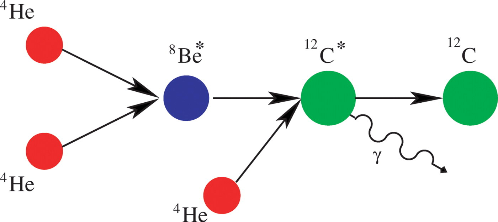
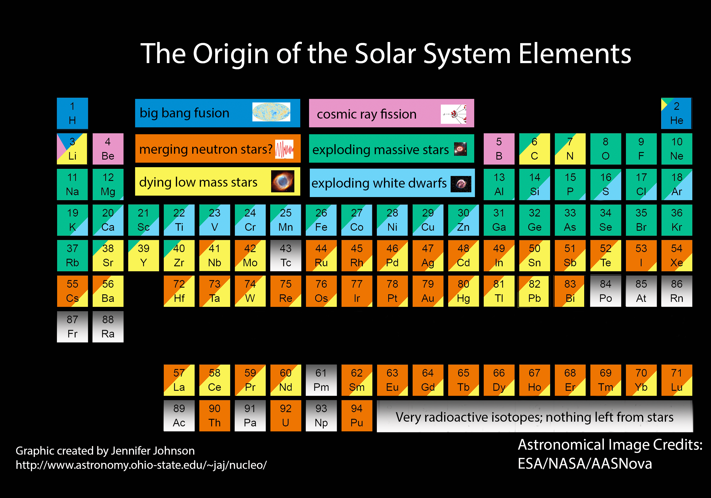

2.5. The Origin of the Elements#
Professor: Max Pettini (IoA)
Learning objectives:
Big-Bang Nucleosynthesis.
Energy production in stars, hydrogen burning and catalytic cycles.
Helium Burning and the \(\alpha\)-elements.
Slow and rapid neutron capture.
Explosive nucleosynthesis.
The sites of nucleosynthesis.
At the beginning of the Universe matter appeared as protons and neutrons. Early fusion could get as far as helium-4 but not beyond. Everything else requires stars in which heavier elements might be considered as nuclear waste products. Main-sequence stars are fusing hydrogen to helium either directly or by catalytic cycles. Once hydrogen has been exhausted and the temperature has risen sufficiently helium nuclei can fuse to form carbon, oxygen, neon etc., the \(\alpha\) elements. Beyond the iron group fusion no longer releases energy and heavier elements require capture of uncharged neutrons. We examine in which stars and when these processes proceed along with how the enriched material is returned to the interstellar medium whence it can be incorporated in new stars and planets.
Big-Bang Nucleosynthesis#
The initial seeds of BBN were sown by George Gamow, his PhD student Ralph Alpher, and Robert Herman in the years after the Second World War. These physicists realised that in the early stages of the universe expansion the first three minutes temperature and densities were sufficiently high to favour a number of nuclear reactions involving protons and neutrons leading to the synthesis of heavier elements up to \(^7\)Li, as shown in Fig. 2.27.
Fig. 2.27 The network of reactions of primordial nucleosynthesis#
All the other elements of the Periodic Table — those that make astronomy, the natural world and life so interesting — were either manufactured in the interior of stars or in the stars’ final explosions. Mass loss from stars, either during or at the end of their lives, returns some of the products of stellar nucleosynthesis to ambient medium, the interstellar medium of galaxies. Subsequent generations of stars—and their planets—form from this enriched interstellar medium in a cycle of galactic chemical evolution. As time progresses, galaxies, with their stars and planets, become progressively more enriched in chemical elements. In a confusing terminology, astronomers refer to ALL elements produced in stars as metals, to distinguish them from the H and He made during BBN.
How Do Stars Shine?#
Stars form in the cold, dense interiors of giant molecular clouds (GMCs): with infrared telescopes we see directly the process of star formation in such environments. Within GMCs, condensations with mass exceeding the so-called Jeans mass (which in turn depends on temperature and density) can easily come out of equilibrium and start collapsing under their own gravity. The collapse and subsequent accretion from the surroundings is halted once sufficient pressure is established in the core of the (proto-)star to balance in the inward pull of gravity. So, for a star to be in hydrostatic equilibrium a negative pressure gradient must exist within the star, with the pressure being larger in the interior than near the surface: \( \frac{dP}{dr} = - \rho \, g \,, \label{eq:he3} \) where \(P\) is the pressure, \(\rho\) is the density and \(g\) is the local acceleration of gravity at radius \(r\).
What supplies the central pressure are nuclear reactions in the hot (millions of degrees) core of the star. The simplest and most common nuclear reaction is the conversion of four protons (the nuclei of H) into a \(^4\)He nucleus. To see how this works considers the following. If we wanted to break up a He nucleus (also sometime referred to as an alpha particle) into its constituents two protons and two neutrons, we would need to supply \(\sim 27\),MeV. It follows that the inverse reaction, whereby four hydrogen nuclei fuse together to form a He nucleus (plus a number of low mass remnants) will release \(\sim 27\)MeV. This energy is the binding energy of the He nucleus, and manifests itself as the mass difference between four H nuclei (4.03 unified atomic mass units or 4.03,u) and one He nucleus (4.00,u). This mass difference \(\Delta m = 0.029\),u, or \(\sim 0.7\)% of the rest mass of four H nuclei, corresponds to an energy \(E = \Delta m \, c^2 = 26.7\),MeV, which is released by the nuclear fusion process. This is fundamentally what powers the Sun and all life on Earth.
Hydrogen Burning#
2.6. The proton-proton chains#
The main reaction chain that powers stars during most of their lives is hydrogen burning: \( 4 ^1_1\,{\rm H} \rightarrow \, ^4_2 \,{\rm He} + 2 e^+ + 2 \nu_e + 2 \gamma \) which releases an energy \({\cal E}_0 = 26.73\),MeV. The two positrons subsequently annihilate with free electrons: \(e^+ \, + \, e^- = 2 \gamma\). The reaction can proceed through three channels (it is quite a common situation in nuclear reactions that different pathways can lead to the same end result), as shown in Fig. 2.28. The balance between PP,I and PP,II varies with temperature, with the former preferred at \(T \lesssim 1.5 \times 10^7\)K; the values indicated in Fig. 2.28 are those appropriate to the central temperature of the Sun, \(T = 1.57 \times 10^7\)K. PP,III is never very important, but it is a source of high energy neutrinos.
Fig. 2.28 The three proton-proton chains. The branching ratios are appropriate to the temperature in the core of the Sun.#
2.7. The Carbon-Nitrogen-Oxygen cycle#
When C, N and O are present and the temperature is sufficiently high, He can be synthesised from four H nuclei through a series of pathways known as the CNO cycle. C, N and O act as catalysts: they make He fusion possible through a series of reactions, but their number is conserved in the cycle. The two main pathways of the CNO cycle are as follows:
with the pathway on the right occurring only \(\sim 0.04\)% of the time. The proton capture by \(^{14}\)N is the slowest step in the cycle; consequently CNO elements tend to be converted to nitrogen during hydrogen burning.
The energy generation rates of both the p-p and CNO cycles are very sensitive to temperature: the higher the temperature, the higher the rate at which the nuclear reactions take place and therefore the more energy is released per second. The temperature dependences of the two processes are as follows: \( {\cal E}_{\rm pp} \propto T^4 ~~ {\rm and} ~~ {\cal E}_{\rm CNO} \propto T^{17} \,. \) The much steeper temperature dependence of the CNO cycle makes it the dominant energy production mechanism in massive stars, whose cores burn at temperatures in excess of 20 million degrees, while the p-p chain is favoured in lower mass stars, such as the Sun. The cross-over point is at \(T \simeq 2 \times 10^7\),K.
Fig. 2.29 The temperature dependence of the energy generation rates of the p-p chain and CNO cycle.#
At higher temperatures other catalytic cycles involving sodium, neon, magnesium can be activated.
Helium Burning#
Whether it proceeds via the p-p chains or the CNO cycles, hydrogen burning leaves behind almost pure \(^4\)He cores in stars. At that point the core contracts raising both the temperature and the density of the gas. When the temperature and density become sufficiently high (\(T \approx 10^8\),K), He nuclei—also referred to as alpha particles—can combine to form \(^{12}\)C by what is known as the triple-alpha process (see {numref}`fig:3alpha’)


Fig. 2.30 The triple-\(\alpha\) process. Two \(^4\)He nuclei collide to form an unstable \(^8\)Be\(^\ast\) nucleus. A third \(^4\)He nucleus collides with \(^8\)Be\(^\ast\) before it breaks u
p to form the resonant excited \(^{12}\)C nucleus which loses energy to drop down to stable \(^{12}\)C.#
This triple alpha reaction was predicted by Fred Hoyle (a previous director of the Institute of Astronomy) in 1954, based on the high abundance of C in the Sun and H II regions like the Orion nebula. It produces C from He nuclei bypassing completely the intermediate elements Li, Be, B, and it explains why C is \(10^5\)–\(10^7\) times more abundant that Li, Be and B in the Universe.
Advanced Burning Stages#
Once sufficient quantities of \(^{12}\)C have been synthesised via the triple alpha reaction, heavier elements can be formed from \(^{12}\)C via the capture of additional \(^4\)He nuclei: \( ^{12}_{~6}\,{\rm C} + ^4_2{\rm He} \rightarrow ^{16}_{~8}{\rm O }+ \gamma \) \( ^{16}_{~8}\,{\rm O} + ^4_2 {\rm He}\rightarrow ^{20}_{10}{\rm Ne} + \gamma \)
Nitrogen that has accumulated during CNO hydrogen burning can also capture an \(\alpha\)-particle: \( \rm {^{14}N} + {^4He} \rightarrow {^{18}F} + \gamma \) \( \rm {^{18}F} \rightarrow {^{18}O} + e^+ + \nu_{\rm e} \) \( \rm {^{18}O} + {^4He} \rightarrow {^{22}Ne} + \gamma \)
Fig. 2.31 Binding energy per nucleon as a function of mass number \(A\).#
Fig. 2.32 Close-up near the iron peak. \(^{62}_{28}\),Ni has the highest binding energy per nucleon of any isotope of any element.#
As can be appreciated from Fig. 2.32, fusing elements beyond C releases progressively less energy per nucleon while requiring higher and higher temperatures to bring positively charged nuclei close enough for the fusion reactions to take place. So each subsequent stage in the star’s life last a progressively shorter time. The process can continue so long as it is exothermic, that is so long as the mean mass per nucleon of the final fusion product is lower than that of the fusing nuclei. The binding energy per nucleon curve (see Fig. 2.32) reaches a peak near Fe (hence the term Fe-peak). Fusion of Fe-peak elements to form elements of higher mass is an endothermic process requiring an additional supply of energy (and conversely, energy can be released by the fission of these heavier nuclei into lighter ones, as in a nuclear power station).
At the end of its life, the interior of a massive star is stratified, as shown in Fig. 2.33 The formation of a core of iron-group elements marks the end of a star’s nuclear burning life. When no more energy is available from nuclear fusion to support the core, the core collapses to a neutron star or a black hole. The enormous release of gravitational energy causes an explosion visible as a core-collapse supernova which returns the processed outer layers to the interstellar medium.
Fig. 2.33 The stratified structure of the core of a massive star.#
Iron and Type Ia Supernovae#
Most of the Iron synthesised by massive stars is not returned to the ISM, as it collapses into the neutron star or black hole. So where does Fe come from?
The origin is Fe is believed to be a different phenomenon which involves pairs of lower mass stars. Most stars are born in pairs (or more generally multiple systems). If the members of a binary pair are sufficiently close, mass can be transferred from one member to the other. Stars that start their lives with masses \(M < 8 M_\odot\) never reach core temperatures high enough to burn C and O. At the end of their lives they eject their outer layers leaving behind a hot, compact CO core that slowly cools with time. Such a remnant is called a White Dwarf.
Quantum mechanics and special relativity tell us that there is a maximum mass for a WD, approximately \(1.44\,M_\odot\), called a Chandrasekhar mass after the Indian astronomer who first proposed this limit while working here in Cambridge. If mass transfer onto a white dwarf results in this limit being exceeded, or if two binary white dwarfs merge, the star undergoes a thermonuclear explosion termed (for reasons that need not concern us here) a Type Ia supernova. Just before the explosion, at about \(1.38\,M_\odot\), cool carbon-oxygen white dwarfs reach densities at which cold carbon fusion begins, setting off a thermonuclear runaway in which most of the star reaches nuclear statistical equilibrium before entirely exploding. The end result is the production of about one solar mass of \(^{56}\)Ni which subsequently decays to \(^{56}\)Fe.
Elements Heavier than Iron, Neutron Capture#
We conclude our description of stellar nucleosynthesis with a brief mention of the mechanism whereby elements heavier than Fe are thought to be produced in stars.
Neutrons have no electric charge and so no Coulomb barrier to overcome when penetrating a nucleus. They have very high reaction cross-sections with nuclei that increase with the typical area of the nucleus. So neutrons are more easily captured by iron and heavier elements than small light nuclei such as protons and \(\alpha\)-particles. In this way heavy, neutron-rich isotopes can be built up. Such isotopes can be either stable or unstable.
Fig. 2.34 Example of the nucleosynthesis of \(^{59}\)Co, \(^{60}\)Ni and \(^{63}\)Cu from \(^{56}\)Fe via slow neutron capture.#
It is important to distinguish between slow and rapid neutron capture (termed the s-process and the r-process), depending on the relative timescales of \(\beta\)-decay and neutron capture. In the example of the s-process shown in Fig. 2.34, \(^{56}\)Fe absorbs a neutron to form \(^{57}\)Fe. Subsequent capture of two more neutrons leads to the formation of \(^{59}\)Fe. Of the four Fe isotopes shown, the three lighter ones are stable, but \(^{59}\)Fe is unstable, with a half-life of 44.5 days. Thus, if the flux of neutrons is not high and the interval between successive n-captures is longer than the half-life of \(^{59}\)Fe, there is time for \(^{59}\)Fe to decay to \(^{59}\)Co by \(\beta\)-decay (n,\(\rightarrow\), p + e\(^-\) + \(\overline{\nu}_e\)). The process can continue to form higher and higher mass elements, as shown in Fig. 2.34
Fig. 2.35 Example of the nucleosynthesis of \(^{197}\)Au (stable gold) from \(^{188}\)Yb via rapid neutron capture.#
On the other hand, if the flux of neutrons is sufficiently high and the time interval between subsequent neutron captures is small compared to the half-life of the isotopes concerned, super-neutron-rich isotopes can be formed, as in the example of the r-process shown in Fig. 2.35 When the neutron flux stops, these super-neutron-rich isotopes will undergo a series of \(\beta\)-decays until a stable isotope is reached.
Trans-Fe-peak elements can be formed by either s- or r-process nucleosynthesis, or both, depending on the stability of their neighbours in the Periodic Table. Typical s-process elements include Cu and Pb, while Eu is the prototypical signature of r-process nucleosynthesis in stellar spectra. It is generally though that s-process nucleosynthesis takes place primarily in evolved low and intermediate mass stars, while the r-process occurs mainly in supernova explosions and, as now confirmed observationally, in the explosion accompanying the merger of two neutron stars.
Conclusions#
Fig. 2.36 collects together our ideas of the main sites and processes responsible for synthesising the elements of the Periodic Table. Most elements beyond C and N and are produced in stellar explosions, whether the core-collapse of massive stars, or the total disruption of lower mass stars in binary systems, or even the merging of neutron stars—an event only recently observed via the gravitational waves it generated. Supernovae and neutron star mergers are rare events within galaxies. Evidently, there must be an efficient mechanism for distributing their seeds widely in the space between the stars so that they can be incorporated in subsequent generations of stars and planets, and finally make possible life on Earth and elsewhere.


Fig. 2.36 A compendium of current ideas on the origin of elements.#